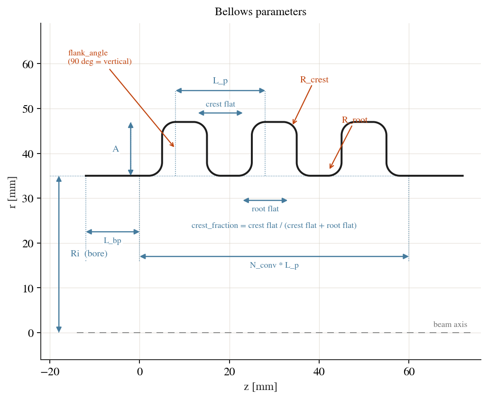
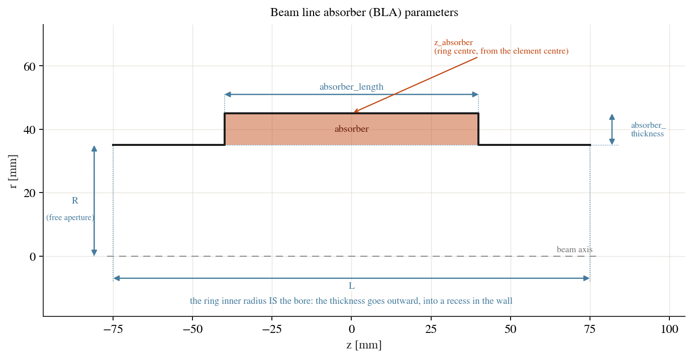

Geometry and parameterisation¶
Every cavity is an axisymmetric structure, so its geometry is fully described
by the meridian — the 2D outline of the wall in the (z, r) half-plane
(r >= 0). cavsim2d builds that outline once, from a small set of named
parameters, and the same outline drives every analysis (eigenmode, wakefield,
multipacting). There is no separate geometry per solver — see
One geometry, every analysis below.
The unified geometry model¶
A model turns its parameters into a Profile: a chain
of boundary segments (lines and exact ellipse / circle / spline arcs) walked from
the axis, around the wall, and back. Each segment carries a boundary-condition
label:
PEC— a perfect electric conductor: the cavity wall.PMC— a perfect magnetic conductor: an aperture / symmetry plane (the beam-pipe mouth, or a cell mid-plane in a reduced tuning geometry).the axis
r = 0is the axisymmetry line and is handled implicitly.
These labels are the only “physics” the geometry carries; the solver reads them to
set boundary conditions. cav.plot('geometry') draws the meridian (the upper
half only — the analysed domain).
Material regions¶
The meridian encloses one region, vacuum by default. A cavity can also declare
dielectric sub-regions with
add_dielectric() — an axisymmetric
rectangular ring in (z, r), i.e. an annular cylinder in 3D:
# a 0.5 mm-thick quartz tube lining a 5 mm aperture, running the full length
cav.add_dielectric('quartz', 3.8, z=(-1e4, 1e4), r=(2.0, 2.5), maxh=0.15)
Lengths are in millimetres, like every other cavity dimension, and the region
is clipped to the cavity — so a generous z span simply means “the full
length”. maxh sets the local element size inside the region, which a thin
shell needs.
Internally the profile face is split into one named face per region plus the
background ('Domain'), and the pieces are glued so the mesh is conformal
across each interface. That is what lets the HCurl space enforce
tangential-E continuity — the physical dielectric interface condition — with
no special handling in the solver. Each interface becomes its own boundary named
IF_<material>, distinct from PEC/PMC so it carries no boundary
condition; it can be addressed for local refinement via edge_maxh.
Material regions are used by the eigenmode solver only; see Dielectric regions for the physics, the extra QOIs and the limits.
One geometry, every analysis¶
The single meridian serves all three analyses, and the differences between them live entirely in the configuration dictionaries (see Configuration reference), never in the geometry:
Eigenmode meshes the profile directly (native
netgen.occ) or via a.geofile; mesh resolution iseigenmode_config['mesh_config'](h,p).Wakefield writes an ABCI deck from the same profile. ABCI requires a beam pipe at each end, so the writer adds one automatically if the geometry has none — you do not author a wakefield-specific shape. Bunch, wake length and rotation are
wakefield_configkeys.Multipacting reuses the eigenmode field and mesh: it reads the
PECwall vertices as emission sites and tracks electrons in the solved field. It needs no geometry of its own; its resolution can be refined withmultipacting_config['pec_maxh']/mesh_config.
So a new geometry only has to produce a correct labelled meridian once; it then works in every analysis (see Writing a new cavity model).
Built-in parameterisations¶
All lengths are in millimetres.
Elliptical cavity (EllipticalCavity)¶
The workhorse SRF shape. A half-cell (one quarter of a full cell’s meridian)
is seven parameters [A, B, a, b, Ri, L, Req]:
A,B— the z and r semi-axes of the equator ellipse (outer wall).a,b— the z and r semi-axes of the iris ellipse (near the aperture).Ri— the iris / aperture (beam-pipe) radius.L— the half-cell length (iris plane to equator plane); a full cell is2 L.Req— the equator radius.
The wall inclination alpha is derived from these (an optional 8th slot is
accepted and ignored on input). A full cell mirrors the half-cell about the
equator plane and the axis; a multi-cell cavity chains n_cells of them:
EllipticalCavity(n_cells, mid_cell, end_cell_left, end_cell_right, beampipe='both')
mid_cell sets the interior cells; end_cell_left / end_cell_right set
the two ends (each defaults to mid_cell). See The multicell parameterisation.
Flat-top elliptical (EllipticalCavityFlatTop)¶
An elliptical cell with a straight flat section at the equator, taking the same per-cell parameterisation as the elliptical cavity. Used where a flattened equator is wanted (e.g. some low-beta or crab geometries).
Pillbox (Pillbox)¶
A right-cylinder cavity, five parameters [L, Req, Ri, S, L_bp]:
L— cell (barrel) length along the axis.Req— cavity (barrel) radius.Ri— iris / aperture (beam-pipe) radius.S— inter-cell drift length (the straight gap between adjacent cells atRi; 0 to butt cells together).L_bp— beam-pipe length added at each end selected bybeampipe.
Pillbox(n_cells, [L, Req, Ri, S, L_bp], beampipe='both')
Spline cavity (SplineCavity)¶
A free-form wall defined by six Bézier control points p0 .. p5, each a
[z, r] coordinate pair:
SplineCavity({'geometry': {'p0': [0, 35], 'p1': [0, 70], 'p2': [30, 103],
'p3': [85, 103], 'p4': [115, 70], 'p5': [115, 35]}})
Each coordinate is individually addressable as a tune / UQ variable named
p<i>_z and p<i>_r (e.g. 'p2_r', 'p3_z'). Placing a control point
at the pipe radius gives a C1-continuous (smooth, non-sharp) iris.
For a spline cavity, cav.plot('geometry') also overlays the control points
and the polygon connecting them (dashed, over the interpolated wall) — so you
can see where each p<i> sits relative to the curve it shapes. It is on by
default; pass control_points=False to hide it (or True to force it).
cav.control_polygons() returns the placed control polygons (metres, one per
cell) if you want to draw them yourself.
RF gun (RFGun)¶
A photoinjector / VHF-gun profile built from a dictionary of named segment
lengths, radii and angles (y1, R2, T2, L3, R4, L5, R6, L7, R8, T9, R10, T10,
L11, R12, L13, R14, x):
RFGun({'geometry': {...}}, beampipe='none')
Every entry is a scalar tune / UQ variable. A cathode beam pipe can be added with
beampipe for wakefield studies.
Beam-line elements¶
Devices that concatenate into a beam line with +. All lengths are in
millimetres, like every other geometry in cavsim2d.
Beam pipe (Beampipe)¶
A plain cylinder Beampipe(R, L) — a minimal reference geometry, useful for
validating mode frequencies against analytics, and the drift element of a beam
line.
parameter |
meaning |
|---|---|
|
bore radius |
|
length |
|
end-face wall type, |
The ends are open by default, so the eigenmode config steers them like any
other geometry (boundary_conditions='ee' closes them, 'oo' puts a PML
on each). ends='pec' builds them as solid plates instead, which no boundary
condition can reopen.
CircularWaveguide(R, L) is the deprecated former name; it is Beampipe
with ends='pec'.
Bellows (Bellows)¶
A corrugated pipe section: N_conv convolutions on a bore of radius Ri.
One convolution is a root flat, a flank, a crest flat and a flank back down,
and every corner is rounded.
parameter |
meaning |
|---|---|
|
bore (root) radius |
|
convolution depth; the crest sits at |
|
period of one convolution |
|
number of convolutions (an attribute, not a continuous tune/UQ variable) |
|
corner radius at the root |
|
corner radius at the crest |
|
share of the period’s flat length given to the crest (default 0.5) |
|
flank angle from the axis in degrees (default 90, i.e. vertical) |
|
straight pipe carried at each end (default 0) |
{kind=link}

Fig. 1 Bellows parameters.¶
The corner radii are checked analytically at construction — both corners must
fit on their flat, and the two sharing a flank must both fit on it — so an
infeasible set is rejected by name before anything meshes. Where a radius
reaches L_p/4 the flats vanish and the wall runs arc to arc, which is the
nominal shape of a hydroformed convolution rather than an edge case.
Taper (Taper)¶
A conical transition between two bore radii — the controlled alternative to the abrupt radial step that concatenating mismatched elements otherwise leaves.
parameter |
meaning |
|---|---|
|
bore radius at the upstream end |
|
bore radius at the downstream end |
|
overall element length |
|
straight run of pipe before the cone (default 0) |
|
straight run of pipe after the cone (default 0) |
|
radius rounding both transition corners (default 0, sharp); needs a straight run to sit on |
|
derived — |
|
derived — cone half-angle from the axis, degrees |

Fig. 2 Taper parameters.¶
With no straight runs the cone spans the whole element, so its corners belong
to whatever it is joined to and R_fillet is ignored rather than being an
error.
Beam line absorber (BLA)¶
A beam pipe with a lossy dielectric ring set into its wall, to damp modes that propagate out of a cavity into the beam tube.
parameter |
meaning |
|---|---|
|
bore radius — the free aperture, unchanged by the ring |
|
overall element length |
|
axial length of the ring |
|
radial thickness, measured outward from the
bore: the ring spans |
|
axial centre of the ring, from the element centre (default 0) |
|
permittivity and loss tangent of the absorber |
|
mesh size inside the ring |
{kind=link}

Fig. 3 Beam line absorber parameters.¶
The ring is an ordinary material region, so it needs the eigenmode solver’s dielectric path; see Eigenmode Analysis.
Assemblies (Assembly)¶
Devices concatenate with + into an Assembly, which is itself a
Cavity — it meshes, solves, tunes and optimises like a single geometry:
line = Beampipe(R=50, L=120) + Taper(R_left=50, R_right=80, L=80) + cav
parameter |
meaning |
|---|---|
|
the devices, upstream to downstream |
|
straight drift at each junction, one value or one per junction (default 0 — the elements butt) |
|
override for the two outer end faces (default: keep what the end elements declare) |
|
silence the aperture-mismatch warning (default False) |
Where two adjacent elements meet at different apertures the junction is closed
with an abrupt radial step. That is a real structure, so it is built — but it is
easy to create by accident and invisible once the walls are joined, so
check_continuity() reports every one in
a single warning when the assembly is built, giving each junction’s axial
position, the two radii and the step size:
assembly 'line': aperture mismatch at 1 junction, closed with an abrupt
radial step:
z = 40.000 mm : 'narrow' ends at r = 40 mm, 'wide' starts at r = 80 mm
-> step of +40 mm
check_continuity() returns the same information as a list of dicts
(index, labels, radii, step, z) for programmatic use. Pass
allow_steps=True when the steps are intended, to silence the warning, or put
a Taper between the elements for a gradual transition.
Joining drops the aperture on each side of a junction, so adjacent walls meet
and the vacuum is one region: there is no interface boundary, and an assembled
cavity reproduces the monolithic one exactly. Only the two outer ends are
boundaries, and line.set_ends('pec') overrides whatever the end elements
declared — including reopening an end an element built closed.
Element parameters are namespaced '<label>:<name>' ('bellows_1:A',
'cav:Req_m'), and that string is the handle for tuning, optimisation and
UQ. Labels come from the elements’ own name, suffixed _1, _2, …
where a name repeats. Each element keeps enforcing its own constraints.
element_spans() reports where each element sits along the line (label,
kind, z0, z1, in mm), and shade_elements(ax) shades those extents
behind an existing plot so a field profile can be read against the hardware.
Elements of the same kind share a colour, and a faint rule marks every boundary
so two like elements in a row stay distinguishable. Each band is also named in
place: a wash light enough to sit under a curve cannot carry identity by colour
alone, so the colour groups the bands by kind and the label identifies them.
Passive elements — pipes, tapers, bellows, absorbers — declare
contributes_cells = False, so they do not count towards the assembly’s
n_cells. That matters because n_cells selects the monopole mode of
interest: only the cavities set which mode of the line is reported.
Use chain= instead to repeat one cavity into a module — a different
operation, and unchanged.
The multicell parameterisation¶
Only the elliptical families decompose into cells; the canonical multicell
representation is the half-cell array, cav.half_cells(): a
(2 * n_cells, 7) array whose row 2k is the forward half of cell k+1
and row 2k+1 its backward half.
Cells share geometry at their seams, and continuity is enforced:
Reqis shared by a cell’s two halves (its equator) —n_cellsvalues.Riis shared across an iris plane —n_cells + 1values (two apertures andn_cells - 1internal irises).A, B, a, b, Lare free per half-cell —2 * n_cellsvalues each.
Two ways to name multicell parameters:
By cell block (the default). Because
uses_cell_suffixesis set for elliptical cavities, a bare tune variable like'Req'is resolved through the cell type:Req_m(mid-cells),Req_el(end-cell-left),Req_er(end-cell-right). This is what atune_config['cell_type']mapping uses — see Cavity Tuning.Per half-cell (independent).
cav.set_half_cells(array)installs an explicit, independently-varying half-cell array (honouring the continuity constraints above). This is what multicell UQ perturbs — every free entry becomes its own random variable — see Uncertainty Quantification.
Because a multicell UQ variant is expressed purely through half_cells(), the
native profile() renders it directly, so it flows into eigenmode and
wakefield without any special writer.